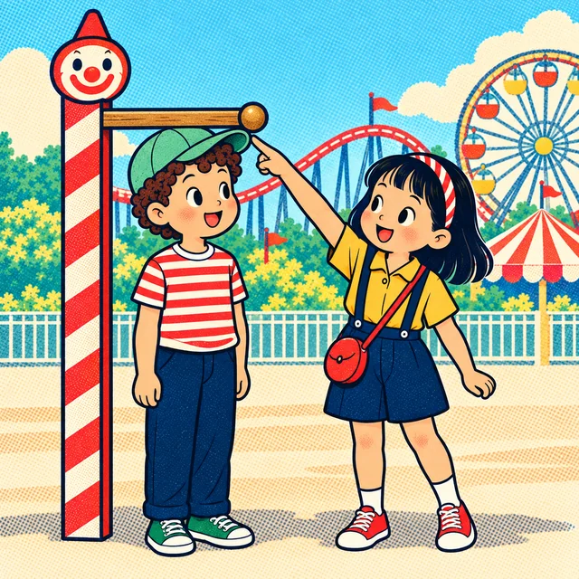

課前暖身漫畫：剛好 140，算不算「以上」？
雲霄飛車門口的小丑立牌規定：身高 \(140\) 公分以上才能搭乘。小晴走到立牌旁一站，頭頂剛好卡在小丑伸出的橫桿正下方——不多不少，剛好 \(140\)。她高興地歡呼，下一秒卻愣住了：「剛好等於，到底算不算『以上』？」旁邊的阿哲倒是很有把握。這一節的第一件事，就是替這種「剛好卡在界線上」的情形立下規則。
重點 1：不等號的意義——\(\ge\) 是「\(\gt\) 或 \(=\)」
重點整理與敘述
- 四個不等號：用來表示兩個量「不一樣大」的關係，開口朝向大的那一邊。
| 符號 | 讀法 | 意思 | 成立的例子 |
|---|---|---|---|
| \(\gt\) | 大於 | 左邊比右邊大 | \(7 \gt 3\) |
| \(\lt\) | 小於 | 左邊比右邊小 | \(-2 \lt 1\) |
| \(\ge\) | 大於或等於 | 比右邊大，或剛好相等 | \(4 \ge 4\) |
| \(\le\) | 小於或等於 | 比右邊小，或剛好相等 | \(-5 \le 0\) |
- \(\ge\) 是把兩句話合併起來：公路上最低速限 \(60\) 公里，表示時速 \(x\) 要「大於 \(60\)」或「等於 \(60\)」，合併寫成 \(x \ge 60\)，讀作「\(x\) 大於或等於 \(60\)」。
- 「或」只要有一個成立就算成立：判斷 \(4 \ge 4\) 時，「\(4 \gt 4\)」不成立、「\(4 = 4\)」成立，有一個成立，所以 \(4 \ge 4\) 成立。
- 剛好等於時最容易錯：\(4 \gt 4\) 不成立，\(4 \ge 4\) 卻成立——差別只在底下有沒有那一條等號線。
- 同一個關係有兩種寫法：\(3 \lt 8\) 也可以寫成 \(8 \gt 3\)，意思完全相同。
- 負數比大小沿用第一冊：數線上愈右邊的數愈大，所以 \(-2 \gt -5\)。

視覺互動探索：身高量測門
選一個不等號，調整規定的身高與小朋友的身高。特別試試剛好等於的時候，有等號與沒等號的結果差在哪裡：
形成性評量 (不等號的意義)
Q1. 某遊樂設施規定搭乘者的身高 \(x\) 公分要符合 \(x \ge 125\)。身高分別是 \(124\)、\(124.5\)、\(125\) 公分的三位小朋友來排隊，下列敘述何者正確？
解析：答案為 B。把三個身高逐一和 \(125\) 比：\(124\) 與 \(124.5\) 都比 \(125\) 小，「\(\gt\)」與「\(=\)」都不成立；\(125\) 雖然沒有比 \(125\) 大，但 \(125 = 125\) 成立。\(\ge\) 是「\(\gt\) 或 \(=\)」，有一個成立就算成立，所以只有 \(125\) 公分的可以搭乘。
A 錯：\(124\) 與 \(124.5\) 都沒有達到 \(125\)。
C 錯：規定比的是實際身高，不會先四捨五入；\(124.5\) 比 \(125\) 小。
D 錯：這是把 \(\ge\) 當成了 \(\gt\)，以為剛好 \(125\) 也不行。
Q2. 下列哪一個不等式不成立？
解析：答案為 D。數線上 \(-4\) 在 \(-3\) 的左邊，所以 \(-4\) 比 \(-3\) 小；「\(-4 \gt -3\)」與「\(-4 = -3\)」兩個都不成立，\(-4 \ge -3\) 不成立。
A 成立：\(6 = 6\)，\(\ge\) 包含等於。
B 成立：\(-1\) 比 \(0\) 小，「小於」那一半成立。
C 成立：正數一定比負數大。
重點 2：一元一次不等式——三件事都要符合
重點整理與敘述
- 不等式：含有不等號 \(\gt\)、\(\lt\)、\(\ge\)、\(\le\) 的式子，例如 \(x \lt 6\)、\(y \ge 65\)、\(3 \gt 1\)。
- 一元一次不等式：不等式中只含一種未知數（一元），而且未知數的次數是 \(1\)（一次）。
- 依序檢查三件事：有不等號嗎？只有一種未知數嗎？未知數的次數是 \(1\) 嗎？三件都是，才是一元一次不等式。
- 和方程式只差在符號：\(2x - 1 = 5\) 是一元一次方程式；把等號換成不等號，\(2x - 1 \lt 5\) 就是一元一次不等式。
- 未知數用什麼字母、出現幾次都不影響：\(3t + t \le 8\) 只有 \(t\) 一種未知數，仍是一元一次不等式。
| 式子 | 檢查結果 | 一元一次不等式？ |
|---|---|---|
| \(x + 3 \lt 12\) | 三件都符合 | 是 |
| \(6x - 1 = 11\) | 沒有不等號，是方程式 | 否 |
| \(2x - y \ge 4\) | 有 \(x\)、\(y\) 兩種未知數 | 否 |
| \(x^2 \gt 9\) | \(x\) 的次數是 \(2\) | 否 |
| \(5 \gt 2\) | 沒有未知數 | 否 |
視覺互動探索：三道檢查閘門
點一張算式卡，看它能不能通過三道閘門。只要有一道沒通過，就不是一元一次不等式：
形成性評量 (一元一次不等式)
Q3. 下列何者是一元一次不等式？
解析：答案為 C。\(3y - 1 \le 8\) 有不等號、只有 \(y\) 一種未知數、\(y\) 的次數是 \(1\)，三件都符合。
A 錯：只有等號，是一元一次方程式。
B 錯：\(x^2\) 的次數是 \(2\)。
D 錯：有 \(x\)、\(y\) 兩種未知數，是二元一次不等式。
Q4. 下列敘述何者正確？
解析：答案為 D。\(\frac{m}{4}\) 就是 \(\frac{1}{4} \times m\)，\(m\) 的次數仍是 \(1\)；式子有不等號、只有 \(m\) 一種未知數，是一元一次不等式。
A 錯：\(x = -4\) 只有等號，不是不等式。
B 錯：\(7 \gt -2\) 是不等式（而且成立），但裡面沒有未知數。
C 錯：有 \(a\)、\(b\) 兩種未知數。
重點 3：習慣用語——先看方向，再看端點
重點整理與敘述
| 習慣用語 | 不等號 | 剛好等於算不算 |
|---|---|---|
| 大於、超過、高於 | \(\gt\) | 不算 |
| 小於、未滿、低於、不到、不夠、不足 | \(\lt\) | 不算 |
| 不小於、不低於、至少、以上（含） | \(\ge\) | 算 |
| 不大於、不超過、至多、以下（含） | \(\le\) | 算 |
- 翻譯一個詞只要問兩件事：符合的數比界線大還是小？剛好等於界線算不算？
- 「不」會把方向翻過來：「超過 \(10\)」是 \(\gt 10\)；「不超過 \(10\)」是「小於或剛好等於 \(10\)」，寫成 \(\le 10\)——剛好 \(10\) 並沒有超過。
- 「以上」「以下」包含界線本身：課本在這兩個詞後面加註「（含）」，「\(12\) 歲以上（含）」寫成 \(x \ge 12\)。「未滿」則不含：「未滿 \(12\) 歲」寫成 \(x \lt 12\)。
- 整條式子也照樣翻：「\(5x + 2\) 超過 \(30\)」寫成 \(5x + 2 \gt 30\)。未知數習慣寫在左邊，寫成 \(30 \lt 5x + 2\) 也對——開口朝向大的那一邊即可。
視覺互動探索：字詞翻譯台
選一個習慣用語、調整界線，看界線左右的三個數哪些符合，再決定方向與含不含等號：
形成性評量 (習慣用語)
Q5. 「\(2x - 5\) 不少於 \(9\)」寫成不等式，下列何者正確？
解析：答案為 B。「不少於 \(9\)」就是「沒有比 \(9\) 少」，也就是比 \(9\) 多，或剛好等於 \(9\)，所以用 \(\ge\)：
\[2x - 5 \ge 9\]
A 錯：少了等號，剛好等於 \(9\) 也算「不少於」。
C 錯：這是把「不少於」看成了「少於」，方向反了。
D 錯：看到「不」字就加上等號，卻忘了「不少於」是比 \(9\) 多的那一邊。
Q6. 下列四個敘述寫成不等式之後，哪一個不包含等號？
解析：答案為 C。「不滿 \(15\) 分鐘」和「未滿」一樣，是還沒到 \(15\) 分鐘；剛好 \(15\) 分鐘就已經滿了，不算，所以設排隊時間為 \(t\) 分鐘時寫成 \(t \lt 15\)，不含等號。
A：「至多 \(300\)」最多到 \(300\)，剛好 \(300\) 也可以，用 \(\le\)。
B：「不低於」＝高於或剛好等於，用 \(\ge\)。
D：「不小於」＝大於或剛好等於，用 \(\ge\)。
看到「不」字別急著加等號：「不滿」的「不」只是「未」的意思。
重點 4：由情境列不等式——先寫出要比的兩個量
重點整理與敘述
- 三個步驟：① 設未知數（題目通常已經給了 \(x\)）；② 把要互相比較的兩個量都寫成式子；③ 由關鍵詞決定不等號。
- 錢不夠：需要的錢比帶的錢多。帶 \(300\) 元買 \(5\) 個每個 \(x\) 元的便當，錢不夠：\(5x \gt 300\)。剛好 \(300\) 元其實是夠的，所以不用 \(\ge\)。
- 錢足夠：有的錢比需要的多，或剛好一樣。原有 \(x\) 元，再加上 \(150\) 元就足夠買 \(480\) 元的鞋子：\(x + 150 \ge 480\)。
- 還可以找錢：花的錢一定比付的錢少，剛好花完就沒有錢可以找。用 \(500\) 元買 \(3\) 本每本 \(x\) 元的書，還可以找錢：\(3x \lt 500\)。
- 平均：先寫出總和，再除以個數。兩次測驗得 \(78\) 分與 \(x\) 分，平均不低於 \(85\) 分： \[\frac{78 + x}{2} \ge 85\]
- 本節只要求列出不等式，不需要化簡；怎麼解，是下一節的事。
| 關鍵詞 | 誰和誰比 | 不等號 |
|---|---|---|
| 錢不夠 | 需要的錢、帶的錢 | \(\gt\) |
| 足夠 | 有的錢、需要的錢 | \(\ge\) |
| 還可以找錢 | 花的錢、付的錢 | \(\lt\) |
視覺互動探索：園區預算台
選一個情境，看它怎麼一步步變成不等式；再試一個 \(x\)，比較兩條長條，確認情境與不等式是不是一起成立：
形成性評量 (情境列式・一個不等號)
Q7. 小安帶了 \(400\) 元去遊樂園，先買了 \(3\) 張每張 \(x\) 元的遊戲代幣卡，剩下的錢還夠買一份 \(85\) 元的套餐。依題意列出的不等式為何？
解析：答案為 D。買代幣卡花掉 \(3x\) 元，剩下 \((400 - 3x)\) 元。「還夠買」表示剩下的錢比 \(85\) 元多，或剛好一樣：
\[400 - 3x \ge 85\]
A 錯：剩下剛好 \(85\) 元也買得起，要有等號。
B 錯：方向反了，那是「不夠買，或剛好夠」。
C 錯：剩下的錢是 \(400 - 3x\)，不是 \(3x - 400\)——錢是從 \(400\) 元裡扣掉的。
Q8. 一件紀念 T 恤 \(x\) 元，小妍拿 \(1000\) 元買了 \(4\) 件，店員還找她錢。依題意列出的不等式為何？
解析：答案為 A。\(4\) 件共 \(4x\) 元，還找錢表示花的錢比付的 \(1000\) 元少：
\[4x \lt 1000\]
B 錯：\(4x = 1000\) 時剛好付完，沒有錢可以找，不能有等號。
C 錯：花的錢比付的錢多，那是錢不夠。
D 錯：\(4\) 件的價錢是 \(4 \times x\)，不是 \(x + 4\)。
重點 5：有上下限的情境——兩個不等號連寫
重點整理與敘述
- 有下限也有上限時，兩個條件要同時成立。「\(x\) 在 \(20\) 以上（含），但不超過 \(45\)」表示 \(20 \le x\) 而且 \(x \le 45\)。
- 連寫成一條：\(20 \le x \le 45\)，讀作「\(x\) 大於或等於 \(20\)，而且小於或等於 \(45\)」。
- 兩端各自判斷含不含等號，不一定相同：「超過 \(100\)，但不超過 \(200\)」寫成 \(100 \lt x \le 200\)。
- 連寫時兩個不等號方向要相同：小的數寫左邊最常見；寫成 \(200 \ge x \gt 100\) 也對。但 \(100 \lt x \ge 200\) 是錯的寫法，它夾不住 \(x\)。
- 中間也可以是一個式子：「\(2y + 1\) 不小於 \(-3\)，而且小於 \(7\)」寫成 \(-3 \le 2y + 1 \lt 7\)。
| 某樂園票種 | 適用年齡 | 年齡 \(x\) 歲 |
|---|---|---|
| 免費入園 | 未滿 \(4\) 歲 | \(x \lt 4\) |
| 兒童票 | \(4\) 歲以上（含），未滿 \(13\) 歲 | \(4 \le x \lt 13\) |
| 全票 | \(13\) 歲以上（含），未滿 \(65\) 歲 | \(13 \le x \lt 65\) |
| 敬老票 | \(65\) 歲以上（含） | \(x \ge 65\) |
注意每一條界線都是一邊含、一邊不含：剛好 \(13\) 歲只屬於全票，不會同時算兒童票。
視覺互動探索：上下限看板
設定一個設施的身高下限與上限，各自選含不含等號；再調一個身高，看看是不是兩個條件都成立：
形成性評量 (情境列式・兩個不等號)
Q9. 某樂園規定：「搭乘旋轉咖啡杯的兒童，身高須在 \(95\) 公分以上（含），而且不超過 \(135\) 公分。」若身高為 \(h\) 公分，下列何者正確？
解析：答案為 C。兩端各自判斷：「\(95\) 公分以上（含）」包含 \(95\)，寫成 \(95 \le h\)；「不超過 \(135\)」＝小於或剛好等於 \(135\)，寫成 \(h \le 135\)。兩個同時成立：
\[95 \le h \le 135\]
A 錯：下限少了等號，剛好 \(95\) 公分也可以搭乘。
B 錯：上限少了等號，剛好 \(135\) 公分並沒有超過。
D 錯：方向寫反了，這樣變成「\(h\) 比 \(95\) 小，又比 \(135\) 大」，沒有這種數。
Q10. 將「\(3x + 1\) 比 \(-5\) 大，而且不大於 \(10\)」改寫成不等式，下列何者正確？
解析：答案為 A。「比 \(-5\) 大」不含等號：\(3x + 1 \gt -5\)，也就是 \(-5 \lt 3x + 1\)；「不大於 \(10\)」＝小於或等於 \(10\)：\(3x + 1 \le 10\)。連寫成一條：
\[-5 \lt 3x + 1 \le 10\]
B 錯：兩端的等號放反了。
C 錯：不等號的方向全部反了。
D 錯：「不大於」要包含等於。
重點 6：判斷不等式的解——代入，算完再比
重點整理與敘述
- 不等式的解：能使不等式成立的數，稱為該不等式的解。
- 判斷方法是代入：把數代進去算出左邊，再和右邊比，看不等式成不成立。代入負數記得加括號。
- 解通常不只一個：\(x + 2 \gt 5\) 的解有 \(4\)、\(3.5\)、\(100\)⋯⋯凡是比 \(3\) 大的數都是。這一點和一元一次方程式通常只有一個解很不一樣。
- 分數、小數也要驗：解不一定是整數，不要只試 \(1, 2, 3\)。
- 剛好相等時看等號：代入後左右兩邊一樣大，\(\ge\)、\(\le\) 成立，\(\gt\)、\(\lt\) 不成立。
| \(2x - 3 \le 7\) | 代入算左邊 | 和 \(7\) 比 |
|---|---|---|
| \(x = 4\) | \(2 \times 4 - 3 = 5\) | \(5 \le 7\) 是解 |
| \(x = 5\) | \(2 \times 5 - 3 = 7\) | \(7 \le 7\) 是解 |
| \(x = 5.5\) | \(2 \times 5.5 - 3 = 8\) | \(8 \le 7\) 不是 |
| \(x = -1\) | \(2 \times (-1) - 3 = -5\) | \(-5 \le 7\) 是解 |
視覺互動探索：代入檢驗機
選一個不等式，拉動滑桿代入不同的數。每試一個數，數線上就留下一個點——多試幾個，看看解有幾個：
形成性評量 (判斷解)
Q11. 在 \(-4\)、\(3\)、\(3.5\)、\(6\) 這四個數中，哪些是不等式 \(4x - 9 \ge 5\) 的解？
解析：答案為 B。逐一代入左邊 \(4x - 9\)：
\[\begin{aligned}
& x = -4:\ 4 \times (-4) - 9 = -25 \\
& x = 3:\ 4 \times 3 - 9 = 3 \\
& x = 3.5:\ 4 \times 3.5 - 9 = 5 \\
& x = 6:\ 4 \times 6 - 9 = 15
\end{aligned}\]
再和 \(5\) 比：\(-25\) 與 \(3\) 都比 \(5\) 小，不成立；\(5 \ge 5\) 成立（\(\ge\) 包含等於）；\(15 \ge 5\) 成立。所以解是 \(3.5\) 和 \(6\)。
A 錯：漏掉剛好等於的 \(3.5\)。
C 錯：\(x = 3\) 算出 \(3\)，\(3 \ge 5\) 不成立。
D 錯：這兩個數算出來都比 \(5\) 小，是把不等號看反了。
Q12. \(x = -2\) 是下列哪一個不等式的解？
解析：答案為 C。把 \(x = -2\) 代入各式的左邊：
\[\begin{aligned}
& \text{A}:\ 3 \times (-2) + 5 = -1 \\
& \text{B}:\ 1 - (-2) = 3 \\
& \text{C}:\ -4 \times (-2) - 3 = 5 \\
& \text{D}:\ -2 + 7 = 5
\end{aligned}\]
A：\(-1 \gt 0\) 不成立。
B：\(3 \le 2\) 不成立。\(1 - (-2)\) 是加 \(2\)，若誤算成 \(1 - 2 = -1\)，就會以為成立。
C：\(5 \ge 5\) 成立。
D：\(5 \lt 5\) 不成立。同樣是剛好等於 \(5\)，C 有等號所以成立，D 沒有等號所以不成立。
重點 7：在數線上圖示解——空心、實心與方向
重點整理與敘述
- 方向：數線上愈右邊的數愈大，所以 \(x \gt a\)、\(x \ge a\) 的解在 \(a\) 的右邊；\(x \lt a\)、\(x \le a\) 的解在 \(a\) 的左邊。
- 端點：不等號沒有等號（\(\gt\)、\(\lt\)）畫空心圓圈，表示 \(a\) 不包含在解內；有等號（\(\ge\)、\(\le\)）畫實心圓點，表示 \(a\) 包含在解內。
- 解有無限多個，所以從端點沿著數線一直畫到盡頭，線上的每一點都是解。
- 也可以畫成折線：從端點往上畫一小段，再往解的方向水平延伸，意思完全相同。
- 端點是分數或小數時，先估出它在哪兩個整數之間：\(\frac{7}{2} = 3.5\)，端點畫在 \(3\) 與 \(4\) 的正中間。
視覺互動探索：數線畫解台
選不等號、拉動端點，看解怎麼畫；再拉動試驗點，確認落在線上的點都是解：
形成性評量 (圖示解・一個不等號)
Q13. 在數線上圖示不等式 \(x \le \frac{17}{3}\) 的解，下列描述何者正確？
解析：答案為 A。先估端點：\(\frac{17}{3} = 5\frac{2}{3}\)，在 \(5\) 與 \(6\) 之間（比較靠近 \(6\)）。\(\le\) 有等號，端點畫實心圓點；「小於」的數在端點的左邊，往左畫到盡頭。
B 錯：\(\le\) 包含等於，端點要畫實心。
C 錯：比 \(\frac{17}{3}\) 小的數在左邊，不是右邊。
D 錯：端點與方向都錯了，那是 \(x \gt \frac{17}{3}\) 的圖。
Q14. 下圖是某個不等式的解在數線上的圖示，它表示哪一個不等式？
解析：答案為 D。端點在 \(-6\)，畫的是空心圓圈，表示 \(-6\) 不包含在解內，不等號沒有等號；線往右延伸，表示解比 \(-6\) 大。所以是 \(x \gt -6\)。
A 錯：往右畫是大於，不是小於。
B 錯：空心圓圈表示不含等號。
C 錯：方向與等號都錯了。
重點 8：兩個不等號的圖示——畫一段，再數整數
重點整理與敘述
- \(a \lt x \lt b\) 這類有兩個不等號的解，是 \(a\) 與 \(b\) 之間的一段：只畫兩個端點之間，不延伸到盡頭。
- 兩個端點各自判斷：旁邊的不等號有等號就畫實心，沒有就畫空心。\(-1 \le x \lt 4\) 是左端實心、右端空心。
- 也可以畫成ㄇ字形：從兩個端點各往上畫一小段，再把頂端連起來。
- 數範圍內的整數：先畫圖，再數線段上的整數點，實心的端點要算、空心的不算。\(-1 \le x \lt 4\) 的整數解是 \(-1, 0, 1, 2, 3\)，共 \(5\) 個。
- 「正整數」不含 \(0\)：\(-1 \le x \lt 4\) 的正整數解只有 \(1, 2, 3\)，共 \(3\) 個。
- 快速檢查：兩端都是整數時，\(a \le x \le b\) 共有 \((b - a + 1)\) 個整數；每多一端是空心，就少 \(1\) 個。
視覺互動探索：區間與整數點
調整左端與右端，各自選實心或空心，數線上會標出範圍內的整數；切換「正整數」「負整數」，看 \(0\) 和端點什麼時候算、什麼時候不算：
形成性評量 (圖示解・兩個不等號)
Q15. 下圖是某個不等式的解在數線上的圖示，它表示哪一個不等式？
解析：答案為 B。左端 \(-7\) 是空心圓圈，不包含，寫成 \(-7 \lt x\)；右端 \(-2\) 是實心圓點，包含，寫成 \(x \le -2\)。連寫成一條：
\[-7 \lt x \le -2\]
A 錯：兩端的空心、實心看反了。
C 錯：右端是實心，要有等號。
D 錯：\(-2 \lt x\) 而且 \(x \le -7\)，找不到任何數同時比 \(-2\) 大、又不大於 \(-7\)。
Q16. 不等式 \(-\frac{13}{4} \le x \lt 6\) 的正整數解共有幾個？
解析：答案為 A。\(-\frac{13}{4} = -3\frac{1}{4}\)，在 \(-4\) 與 \(-3\) 之間。範圍內的整數是 \(-3, -2, -1, 0, 1, 2, 3, 4, 5\)（右端 \(6\) 是空心，不算）。其中正整數只有 \(1, 2, 3, 4, 5\)，共 \(5\) 個。
B 錯：把空心的 \(6\) 也算進去了。
C 錯：\(9\) 是全部整數解的個數，題目只問正整數。
D 錯：數了全部整數，又把 \(6\) 算進去。
小節總結與核心回顧
一元一次不等式速查表
- 不等號的意義：\(\ge\) 是「\(\gt\) 或 \(=\)」、\(\le\) 是「\(\lt\) 或 \(=\)」，有一個成立就算成立。
- 一元一次不等式：有不等號、只有一種未知數、未知數的次數是 \(1\)，三件都要符合。
- 習慣用語：先問方向（大或小），再問剛好等於算不算。「以上（含）」「至少」「不超過」含等號；「超過」「未滿」「不足」不含。
- 情境列式：把要比的兩個量都寫成式子，再看關鍵詞。「錢不夠」「還可以找錢」不含等號，「足夠」含等號。
- 上下限：兩個條件同時成立，連寫時方向相同，兩端各自判斷等號。
- 判斷解：代入算左邊，再和右邊比；解通常不只一個，剛好相等時看有沒有等號。
- 圖示一個不等號：有等號實心、沒有空心；大於往右、小於往左，畫到盡頭。
- 圖示兩個不等號：只畫兩端之間；數整數時實心算、空心不算，正整數不含 \(0\)。
回到遊樂園：剛好 140 公分
小晴能不能搭？
「\(140\) 公分以上」寫成 \(x \ge 140\)。把 \(x = 140\) 代進去：「\(140 \gt 140\)」不成立，但「\(140 = 140\)」成立，\(\ge\) 只要其中一個成立就算——阿哲說得沒錯，小晴可以搭。如果規定寫的是「超過 \(140\) 公分」，那就是 \(x \gt 140\)，剛好 \(140\) 就差那麼一點點。
為什麼界線一定要講清楚
樂園的票價表如果寫「\(4\) 到 \(13\) 歲兒童票、\(13\) 到 \(65\) 歲全票」，剛好 \(13\) 歲的人就會同時符合兩種票——售票員該收哪一個價錢？所以正式的規定一定寫成「\(13\) 歲以上（含）」「未滿 \(13\) 歲」，讓每一條界線一邊含、一邊不含，每個人都剛好落在一種票裡。
再往前走一步
這一節用「代入」一個一個檢查解，但解有無限多個，不可能全部試完。下一節要學解一元一次不等式：像解方程式那樣一步步整理，直接得到「\(x \gt\) 某個數」，再畫到數線上。其中有一個方程式沒有的新規則——兩邊同乘或同除以負數時，不等號的方向要反過來。